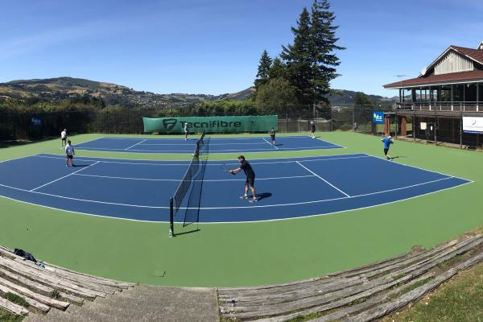

Tennis Otago has a number of Clubs and Associates affiliated to it.
Our Clubs pride themselves on having a supportive and enjoyable culture, and offer a range of memberships to suit your needs.
Clubs generally offer two types of memberships: Competitive and Social. Competitive memberships enable players to play in Tournaments and Interclub, in addition to the social offerings of the club.
Some clubs also specalise in particular age-groups, while others cater for a range of ages. Check out our member clubs below for more information. We also have associates which cater for particular ages, the Otago Seniors/Vets (35+) and the Otago University Tennis Association (Tertiary students). Information about these organisations can be found at the bottom of this page.
Balmacewen

About the club/Philosophy: Established in 1904, situated in the beautiful setting of the Otago Golf Club, Balmacewen Road. The club has two hard courts and three artificial grass courts. The artificial grass was newly laid in late 2015.
What Competitions do your Club teams compete in? A whole range! In the 2015/16 season we had 15 junior and senior teams in the local competition.
What memberships does your club have available? The club has a range of memberships: Adult (Interclub and Social), Student (Interclub), Junior (Premium including Interclub, Basic incluindg Interclub, Social). Additional offers include: country discount, coaching, ball machine, gate key, membership to the Otago Golf Club.
What regular weekly/monthly club events do you have? We have a strong youth and adult social tennis group and play all year round on a Sunday afternoon and Tuesday evening (at the Edgar Centre during the winter evenings and if wet on Sundays). Courts may be used by members at any time. Junior coaching during term four and term one on Friday afternoons and social tennis for juniors which follows on from the lessons. Adult group lessons are also on Friday evening with individual lessons being offered at times to suit.
Location: Otago Golf Club, 125 Balmacewen Road, Dunedin.
Number of courts/type of surface:
Contact: Sarah Stevenson, info@balmactennis.co.nz, 464 0378 or 027 437 4860.
Cosy Dell
Cosy Dell Tennis Club is hidden away in sheltered central Dunedin and features four Astrograss tennis courts.
Cosy Dell caters for all playing abilities fielding a large number of teams playing competitive interclub tennis on Saturday afternoons as well as organised tennis on Tuesday and Thursday mornings and afternoon tennis on Sunday afternoons all year round as well as Monday evenings during the summer.
Location/Address: 1 Kyle Street Dunedin (off the top of Regent Street).
Number of courts/type of surface: 4 courts. All weather synthetic grass.
New Member enquiries: 03 453 5222 or cosydelltennis@gmail.com
Andersons Bay
Being updated soon…
Location: Bayfield Park, Bayfield High School, Shore Street, Andersons Bay, Dunedin.
Website: TBC
Facebook name: Andersons Bay Tennis Club
Contact: Phil Mirfin 027 2292003 or Ali Copeman 4745165 andersonsbaytennis@gmail.com
Green Island
About the club: The club was established in 1885 and incorporated in 1952.
What do you think is a key strong point/point of difference of your club? The club is a family orientated club and encourages seniors, veterans and parents to join in club tournaments with junior players. The club also has a pavilion.
What Competitions do your Club teams compete in? Both Senior and Junior Interclub.
What memberships does your club have available and what is offered within these memberships? The club has Junior and Senior memberships of social and competitive type. Learners are shown the basics and when having good hand-eye co-ordination are encouraged to join in the Otago Tennis Junior Interclub competitions and tournaments. Senior players are given the opportunity to use the courts for practice and encouraged to play in the Otago Tennis Senior Interclub competition and tournaments. Social tennis is played on a Tuesday morning all year round and open to players of all ages and abilities, i.e. shift workers, veterans, women and men.
Location/Address: 181 Main South Road, Dunedin.
Number of courts/type of surface: Four courts, asphalt surface.
Contact: Elizabeth Gray, 488 3767, ftcegray@gmail.com.
John McGlashan College
Being updated soon…
Location: John McGlashan College, 2 Pilkington St, Maori Hill, Dunedin.
Contact: Angela Button, angela.button@mcglashan.school.nz, 027 616 9465.
Mornington/Roslyn
The Mornington/Roslyn Lawn Tennis Club, established in 1938, is a family-oriented club which aims to promote tennis and provide a friendly, relaxed environment with an emphasis on fun. Our objective is to actively engage the community and promote tennis at both social and competitive levels. We have on board a New Zealand/internationally qualified coach, who has helped build a strong, competitive junior section and assists with the Hot Shots programme (designed for primary-school-aged children keen to learn the basics of tennis). We cater for junior and senior players who wish to participate in competitions offered by Tennis Otago, as well as social players of all ages and abilities. We value a sense of fair play, sportsmanship and competitiveness in an environment that encourages development and growth as well as fun and social interaction.
The club has three hard courts which were recently resurfaced, and plan for a fourth (subject to funds). The ultimate aim is to have all four courts surfaced with Plexipave, an international hard court surface. We also offer our members use of a ball machine and key to the gate which provides access all year round.
We offer various types of membership at very reasonable fees. Membership options include: senior competitive or social; junior competitive, junior social and family concessions. Financial members can participate in the regular club events which include:
Social tennis from 6-8pm on Mondays and Wednesdays in the summer, and Saturday afternoons from 1-3pm. During winter Saturday afternoon sessions open to all comers. Social tennis midweek throughout the year. Hot Shots Community Play for beginning tennis players (children) on Thursdays from 5-6pm. Annual: club championships (singles) for both juniors and seniors, and handicap doubles tournament. Monthly social fun nights and BBQs for juniors and parents during the season. Location/Address: 11 Meadow Street, Mornington (behind Mornington Park)
Facebook page name: Mornington Roslyn Lawn Tennis Club
Contact: morningtontennis@gmail.com ; 03 4773259 or 0284042348.
Otago Boys High School
Being updated soon…

Location: Otago Boys High School, 2 Arthur St, Dunedin.
Contact: Andrew Swan, andrew.swan@obhs.school.nz, 477 5527.
St Clair
About the club: The club was established technically in 1912, along the way St Clair was established from Aotea (Union), St Kilda (Union) and St Clair (Association).
What Competitions do your Club teams compete in? Mainly just Senior Interclub.
What memberships does your club have available and what is offered within these memberships? The club has Junior and Senior memberships. Cost for the coming season to be confirmed. Regular Tennis practices are held on Tuesday for Seniors, and Thursday for Juniors (subject to numbers).
Location: Victoria Road, St Clair, Dunedin.
Number of courts/type: 5 hard courts.
Contact: Gary Smyth, gajs@ihug.co.nz, 487 6397.
Taieri
Being updated soon…
Location: 10A Wickliffe Street, Mosgiel.
Contact: Angela Cayford (Club Secretary), admin@taieritennis.co.nz
Postal address: 10A Wickliffe St, Mosgiel 9024
Official Associate Member Otago Seniors Tennis
Otago Senior Tennis caters for Senior Tennis Players from 35 years and older.
We are a good bunch of Senior Tennis Players who regularly play a summer competition from September – April.
The competition is regularly held on a Wednesday afternoon/evening (6pm sharp start) at the Logan Park Outdoor Tennis Courts.
All players have the responsibility to be familiar with the basic tennis rules, customs and play tennis at a good standard.
Cost to join:
$15.00 per year – Club Affiliated Players $20.00 per year – Non-Club Affiliated Players Contacts for further information:
Geoff – 021 082 95794
Denise- 03-489 5142
Otago University Tennis Association (OUTA)
About the club/Philosophy: Established in 2015. The purpose of this was to cater for the University as well as the Polytechnic students with socials and competitive tennis. We aim to also promote tennis through our various events as well as provide a platform for the students to socialise. We cater for players of all ability.
What do you think is a key strong point of your association? We are a student led organisation that hold various social and competitive events which allows us to cater for players of all abilities to a high standard.
What memberships does your club have available and what is offered within these memberships? And/or what regular weekly/monthly club events do you have? It is free to be a member of OUTA as long as you are and University or Polytechnic student. We have fortnightly social tennis on Fridays which is free to attend where tennis rackets and balls are provided. We will also have our inaugural tournament and start our coaching programme this year.
Location/Address: 33 Logan Park Drive, North Dunedin, Dunedin 9016.
Facebook page name: Otago University Tennis Assocation
Facebook group name: Otago University Tennis Association
Contact: Shivam Kalhan, otagouniversitytennis@gmail.com, 02102403405.
- Recent News
- Dapibus ac facilisis in
- Morbi leo risus
- Porta ac consectetur ac
- Vestibulum at eros